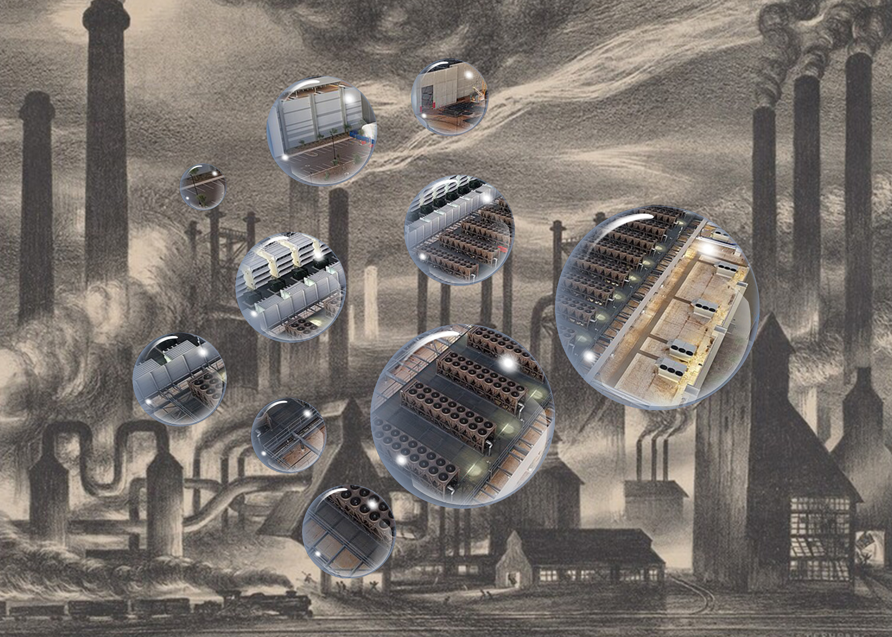
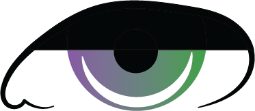
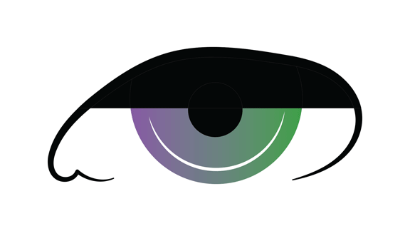
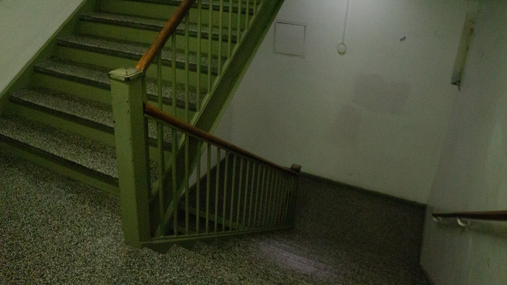
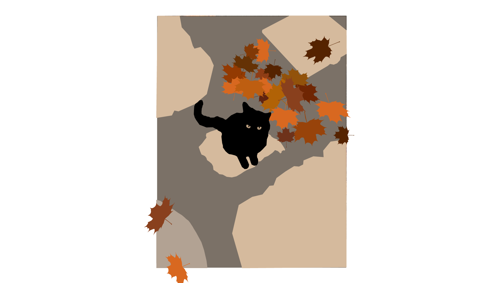

Welcome to my portfolio!

As simple as this is, I think this might be my favorite piece of work! I personally just think it's visually a bit more pleasing, and also feel slightly clever for choosing my cat instead of a person!

Particularly proud of this one! I hope the A.I-centric bubble pops one day!

This eye is supposed to convey disgust, distaste and perhaps jealously. A lackluster malice.

The prior projext, now with blinking!!

Scary stairwell! The colors tweaked make it green and perhaps uncomfortable, if only slightly! I think that's it's strength.

I lied before, *this* is my favorite piece! I had to manually place every lead but I think it turned out rewarding, using the grey of the concrete for the eyes was a good choice as well I think!